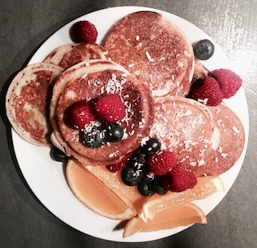

Swedish Pancakes
From Sweden to America, Have Some Fresh And Crispy Pancakes Like No Other!

Ingredients
- 4 eggs
- 2,5 dl milk
- 2,5 dl flour
- 4 teaspoons vanilla
- Zest from 1 lemon
- 40 gram butter
- A pinch of salt
Directions
- Start with mixing the flour, salt, vanilla and the zest from the lemon in a large bowl.
- Add half of the milk in the bowl and stir and then let that rest.
- Take another bowl and whisk the eggs porous. Mix this with the other bowl
- Melt the butter and then add this in the bowl.
- Add the rest of the milk and let the paste rest for 30 minutes.
- Now fry the pancakes on a hot frying pan. Use some butter for the first 2-3 batches
By:Nathalie Gerke